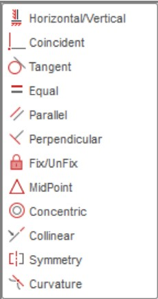
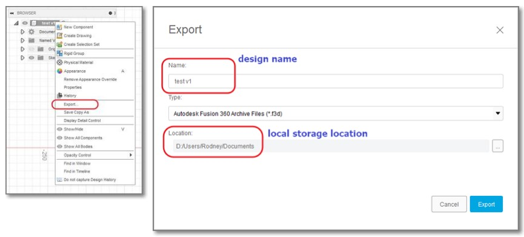
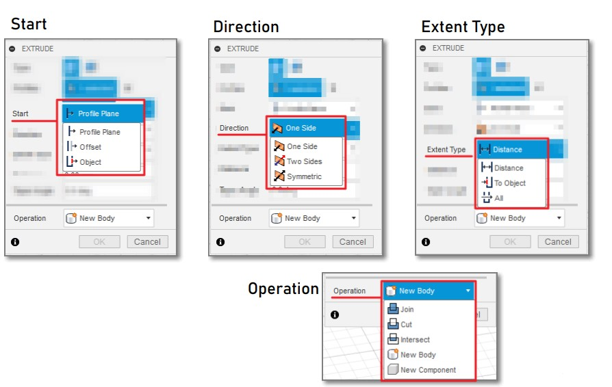

For 3D modelling in Fusion 360 there are some Essential Tools like Fusion 360 Building Blocks, Constraints, Saving Designs, Parametric Design, Methods of Creating 3D Models.
For Fusion 360 Building Blocks, we used firstly like sketch to create a 2D plane, choosing whether it should be constrained or closed and forms the building block of all models. Body is usually create from sketch to become a solid and can combine to form other bodies. Component is made up of bodies and sketches, usually "joined" or "combined", can be used to form other components.

For Constraints, a constrained sketch cannot be changed (accidentally) as each segment is locked by a dimension or a constraint whicha are drawn in BLACK. The picture below is types of constraints to be used:
For Saving Design, Fusion 360 saves all files into the cloud and output format is in .f3d. You can also export your design file to the local storage using export.
For Parameteric Design, it makes your design very flexible as you can used the entered variables as parameters in your design as you set it in an orderly manner.

For Method of Creating 3D Models, there are 3 main methods: Extrusion, Rotation and Sculpting. Extrusion is where you extend a 2D sketch profile into a 3rd plane. Rotation is where you rotate a 2D plane profile around an axis. Sculpting is where you start with a 3D object and by adding, removing, dividing, pulling and pushing the sections form a finished product.
